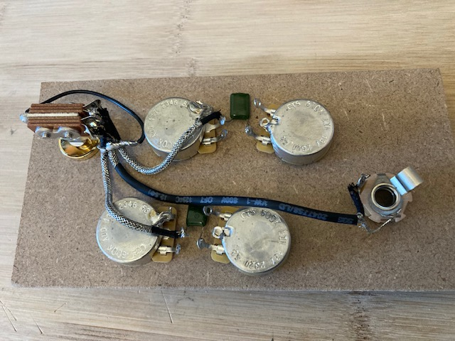
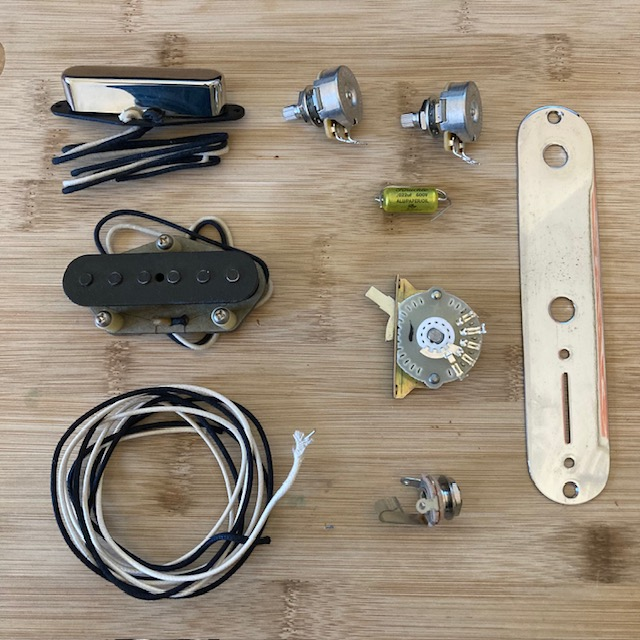

Reparaties en upgrades of modificaties van elektronica



Bijvoorbeeld het vervangen of upgraden van een switches, output jacks en potmeters. De onderdelen worden eerst netjes op een mal (MDF-bordje) gesoldeerd, waarna het geheel eenvoudig in de gitaar geplaatst kan worden. Ook elektronica modificaties zoals bijvoorbeeld een eenvoudige treble bleed, kill switch of een meer ingewikkelde modificatie van een Telecaster naar 4-way switch met parallel en series optie.
Ik kan dit volledig voor je verzorgen, of ik kan de onderdelen ook pre-wired voor je opbouwen, zodat je het daarna zelf in je gitaar kunt overzetten (met nog weinig soldeerwerk in de gitaar). Je kunt er ook voor kiezen dat ik alleen de onderdelen lever en dat je alles zelf doet. Voor een gunstige prijs, en eerst even overleggen kost niets.
Wil je je gitaar upgraden met hoogwaardige CTS-potmeters, Switchcraft jacks of switches, neem dan gerust contact met me op.